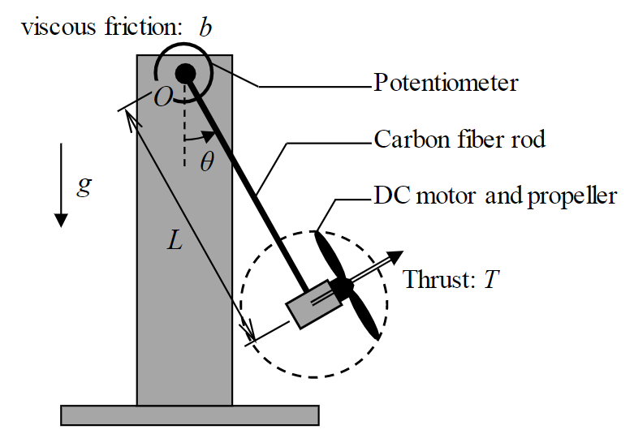
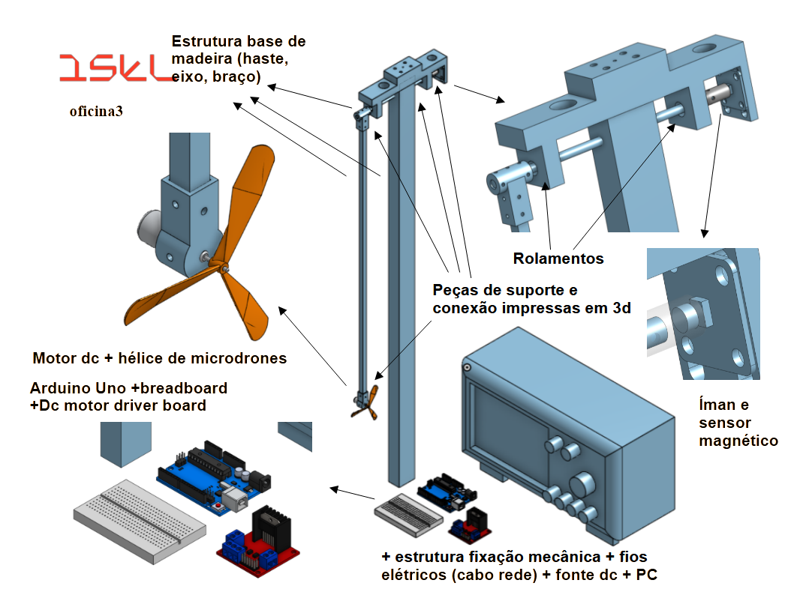
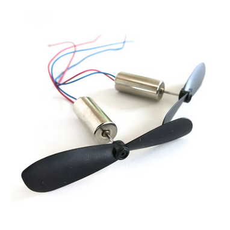
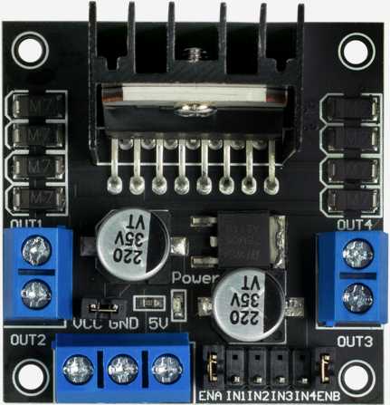

Projeto 1: Aeropêndulo
Introdução
O objetivo deste trabalho de projeto é desenvolver, modelar e testar um Aeropêndulo. Este sistema é amplamente utilizado para o estudo da dinâmica de sistemas de controlo não lineares.
O projeto permitirá que os alunos adquiram competências em:
Modelação de sistemas físicos;
Simulação de comportamento dinâmico;
Implementação de estratégias de controlo;
Integração de hardware e software;
Realização de testes experimentais;
Validação experimental e comparação com simulação.
Trabalho a Desenvolver
O desenvolvimento do projeto deverá incluir:
Estudo dos componentes de hardware (motores, sensores, driver e estrutura mecânica);
Rever equações do movimento do aeropêndulo, simular a resposta
Implementação de comunicação, aquisição e processamento de dados baseado num sistema arduino;
Implementação de um sistema de controlo em malha fechada;
Realização de testes experimentais no protótipo físico
Observar resposta a degraus de referência.
Analisar estabilidade e tempo de resposta.
Validação do sistema através da comparação gráfica quantitativa entre simulação e resultados experimentais.
Relatório Final e apresentação, documentar o desenvolvimento, o sistema implementado, resultados e comparação entre teoria e prática.
Descrição do Sistema
O Aeropêndulo consiste num braço rígido fixo a uma base rotacional, com uma hélice instalada numa das extremidades. A rotação da hélice gera uma força propulsora que influencia o movimento do pêndulo.
O objetivo principal é controlar a posição angular do pêndulo, atingindo um equilíbrio numa posição desejada.
O sistema é inerentemente instável, tornando a sua estabilização um desafio relevante para estudo e implementação prática.

Componentes principais do sistema
Pêndulo: Braço rotacional fixado a um eixo, com uma hélice na extremidade.
Hélice: Gera a força propulsora que controla o movimento do pêndulo.
Sensor de Ângulo: Mede continuamente o ângulo de inclinação do pêndulo.
Controlador: Algoritmo responsável por ajustar a velocidade da hélice de forma a estabilizar o pêndulo.

Motor e Hélice
Requisitos Técnicos
A seleção do motor e da hélice deve obedecer aos seguintes critérios:
Peso reduzido: para minimizar o momento de inércia do pêndulo.
Tamanho compacto: para facilitar a montagem e integração no braço do aeropêndulo.
Preço acessível: dado tratar-se de um protótipo experimental de baixo custo.
Elevada força de impulsão: suficiente para contrariar a gravidade e permitir o controlo ativo do pêndulo.
Compatibilidade elétrica: deve poder ser alimentado por uma fonte de tensão de laboratório e ser controlado por placas driver acessíveis e comuns no mercado académico (ex.: L298N, MOSFET drivers simples).
Disponibilidade comercial: motor de fácil aquisição, com substituição rápida em caso de falha.
Seleção do Motor
Atendendo a estes requisitos, foi escolhido um motor coreless de drone (Micro FPV Quadcopter), com hélice de pequenas dimensões.
Este tipo de motor apresenta baixo peso, rotação muito elevada, resposta rápida e boa disponibilidade no mercado a preços acessíveis.

Características Técnicas do Motor + Hélice
Tipo: Coreless DC Motor (Micro FPV Quadcopter)
Dimensões: 7x16 mm
Peso: ~2 g (sem hélice)
Hélice: 4x55 mm
Tensão nominal: 3.7 V (até 4.2 V)
Velocidade: ~50 000 RPM
Corrente sem carga: 0.08 – 0.1 A
Corrente em bloqueio: 1.8 – 2.0 A
Saída do eixo: 0.8 mm
Comprimento do eixo: 7 mm
Comprimento dos cabos: ~46 mm
Materiais: liga metálica leve
Ensaios de caraterização de Motor e Hélice
Antes da integração no sistema completo do aeropêndulo, é preciso a realização de ensaios individuais ao motor e à hélice. Estes ensaios permitem caracterizar o comportamento elétrico e mecânico do atuador e obter curvas de calibração a usar no modelo e no controlo.
Ensaio de Corrente em Vazio e com carga
Ligar o motor sem hélice a uma fonte de tensão regulada-
Medir a corrente consumida em vazio (sem carga).
Verificar se os valores estão próximos da especificação
Durante tempos curtos (!), medir a corrente consumida com carga, e a tensão associada, e verifica se os valores estão próximos da especificação
Ensaio de Consumo com Hélice
Repetir a medição de corrente com a hélice montada.
Avaliar o aumento de consumo devido à carga aerodinâmica.
Confirmar que o driver e a fonte conseguem fornecer a corrente necessária.
Ensaio de Aquecimento
Fazer funcionar o motor de forma contínua em diferentes regimes.
Verificar a temperatura do motor e do driver após alguns minutos.
Avaliar limites operacionais para evitar sobreaquecimento.
Ensaio de Resposta ao PWM
Controlar o motor via sinal PWM através da placa driver.
Repetir os ensaios anteriores para diferentes ciclos de trabalho (duty cycle).
Curvas de Calibração
Cada curva deve ser obtida de duas formas:
Manual: controlo manual da tensão usando fontes DC de laboratório.
Automatizada: controlo em modo AC através de uma rampa de sinal PWM gerada por um gerador de funções do laboratório, ou o Arduino, a comandar a placa driver .
Curva 1 — Velocidade de Rotação
Objetivo: validar e calibrar a velocidade de rotação do motor em função do comando aplicado.
Medição: sensor ótico ou magnético (encoder).
Resultado: curva de transferência que relaciona a tensão (ou o duty cycle do PWM) com a velocidade angular do motor.
Curva 2 — Força de Impulsão (opcional)
Objetivo: medir a força de impulsão produzida pelo motor e hélice.
Medição: motor fixado a uma estrutura rígida apoiada numa balança digital, observando a redução (ou aumento) do valor aprente de massa em função da força produzida.
Resultado: curva de transferência que relaciona a tensão (ou o duty cycle do PWM) com a força de impulsão gerada.
Placa de Controlo do Motor (Driver)
Requisitos Técnicos
A placa de controlo (driver) deve cumprir os seguintes requisitos para integração no aeropêndulo:
Compatibilidade elétrica com os motores DC escolhidos (tensão de 3–5 V, correntes até 2 A).
Capacidade de comando via PWM, permitindo variar a velocidade de rotação do motor.
Disponibilidade e preço acessível, sendo facilmente encontrada em kits educativos.
Facilidade de utilização em laboratório, com pinos claramente identificados e compatíveis com microcontroladores como o Arduino.
Robustez, capaz de suportar picos de corrente sem falhas.
Seleção
Foi selecionado o módulo L298N (H-Bridge), amplamente usado no ensino e em prototipagem de sistemas de controlo de motores.
Permite comandar dois motores DC independentes ou um motor passo-a-passo bipolar, o que garante flexibilidade para projetos futuros.

Características Técnicas
Controlador: L298N (ponte H dupla)
Número de motores suportados: 2 DC (ou 1 passo-a-passo)
Corrente contínua máxima: 1.2 A por motor
Corrente de pico: 3 A
Tensão de alimentação do motor: até 15 V
Tensão de alimentação lógica: 2.7 – 5.5 V
Dimensões: 43 x 43 x 27 mm
Ligações e Pinos Principais
O módulo L298N possui pinos de controlo digital e pinos de potência:
Alimentação
VCC(5 V) – alimentação do circuito lógicoGND– massa comum (obrigatório ligar à massa do Arduino).+Vmotor– alimentação do motor
Controlo do Motor A
ENA– pino de ativação (‘enable’) do motor A (se ligado a PWM, controla a velocidade).IN1,IN2– definem o sentido de rotação.OUT1,OUT2– saídas para o motor.
Controlo do Motor B (disponível para expansão).
Instruções de Uso
Alimentação inicial
Ligar
VCC(5 V) e+Vmotor(3–5 V) a uma fonte de laboratório.Confirmar o correto estabelecimento da massa comum.
Teste de ativação
Colocar
ENAem nível lógico alto (5 V).Aplicar sinais digitais a
IN1eIN2:IN1=HIGH,IN2=LOW→ motor gira num sentido.IN1=LOW,IN2=HIGH→ motor gira no sentido contrário.IN1=LOW,IN2=LOWouIN1=HIGH,IN2=HIGH→ motor parado.
Teste com PWM
Ligar
ENAa um pino PWM do Arduino.Enviar uma rampa de valores (duty cycle crescente).
Observar a variação da velocidade de rotação do motor.
Verificação antes dos ensaios
Testar o driver sem motor ligado (para garantir que o sinal comuta corretamente, observando a saída com multímetro ou osciloscópio).
Confirmar se não há aquecimento excessivo na placa em vazio.
Só depois ligar o motor com hélice e realizar os ensaios experimentais.
Esta sequência de testes garante que a placa de controlo está a funcionar corretamente antes de ser usada nos ensaios de caracterização do motor e da hélice, e posteriormente na integração com o sistema completo do aeropêndulo.
Sensor (Encoder para Medição de Ângulo)
A escolha do sensor deve considerar:
Requisitos técnicos
Capacidade de medir o ângulo de rotação com resolução adequada (ideal ≥ 10 bits ou centenas de impulsos/rotação).
Frequência de amostragem suficiente para acompanhar a dinâmica do aeropêndulo.
Compatibilidade elétrica com microcontroladores comuns (Arduino, etc.).
Requisitos não técnicos
Baixo atrito: não deve introduzir torque adicional significativo no eixo do pêndulo.
Facilidade de montagem: instalação simples e tolerante a pequenas imprecisões.
Robustez e durabilidade: adequado a uso repetido em ambiente laboratorial.
Custo e disponibilidade: componentes acessíveis e de fácil substituição.
Opções de Encoders
1. Encoder Mecânico Analógico (Potenciómetro Rotativo)
Descrição: Dispositivo resistivo que fornece uma tensão analógica proporcional ao ângulo de rotação.
Sinais e pinos:
Vcc→ alimentação (3.3–5 V).GND→ massa comum.OUT→ tensão analógica proporcional ao ângulo.
Uso: ligar
OUTa uma entrada analógica (ADC) do microcontrolador.Teste antes da integração: rodar manualmente o eixo e verificar se a tensão varia linearmente entre 0 V e Vcc.
Limitações: introduz atrito no eixo, desgaste com o tempo, resolução limitada (~8–10 bits).
2. Encoder Mecânico Incremental (Saída Digital)
Descrição: Botão rotativo com contactos internos que produzem impulsos digitais a cada passo angular. Pode ser de um canal (incremental simples) ou de dois canais (quadratura).
Sinais e pinos típicos:
Vcc→ alimentação (opcional, nem todos precisam).GND→ massa.OUT A→ impulsos digitais (incremental simples).OUT AeOUT B→ impulsos defasados (quadratura).SW→ botão integrado (opcional).
Uso:
Incremental simples: contar impulsos para medir deslocamento relativo (não fornece ângulo absoluto).
Quadratura: permite detetar o sentido de rotação ao comparar a ordem dos impulsos em
AeB.
Teste antes da integração: rodar manualmente e observar os impulsos no Arduino (via monitor série ou LED).
Limitações: não fornece ângulo absoluto, apenas posição relativa; exige inicialização num ponto de referência.
3. Encoder Ótico (Optical Slot Sensor)
- Descrição:Baseado num LED infravermelho e num fototransístor montados frente a frente, separados por uma ranhura (“slot”).Um disco perfurado ou uma pá interrompe o feixe de luz, gerando impulsos digitais sempre que o feixe é bloqueado/libertado.É usado como encoder incremental simples (não fornece posição absoluta nem sentido de rotação).
Sinais e pinos típicos:
Vcc→ alimentação do LED infravermelho (poderá necessitar uma resistência em série de limitação de corrente, por ex. 150–330 Ω).GND→ massa comum.OUT→ saída digital do fototransístor (alto/baixo consoante a passagem do feixe).
- Uso:Ligar
OUTa uma entrada digital do microcontrolador.Contar impulsos ao longo do tempo para obter velocidade de rotação ou deslocamento angular relativo.Não fornece ângulo absoluto nem direção de rotação (apenas número de interrupções). - Teste antes da integração:Mover manualmente o disco ou pá que atravessa o sensor.Verificar a geração de impulsos digitais no Arduino (via LED indicador ou monitor série).
- Vantagens:Elevada resolução possível (dependente do disco ou pá usados).Simples e barato.
Limitações:
Requer alinhamento preciso entre disco/pá e sensor.
Não mede direção de rotação (apenas incrementos).
4. Encoder Magnético (Sensor de Campo)
Descrição: Um íman diametralmente magnetizado no eixo é detetado por um sensor magnético (Hall ou magnetorresistivo). Fornece saída analógica (tensão ∝ ângulo), digital incremental ou dados digitais via I²C.
Sinais e pinos típicos (variam consoante modelo):
Vcc,GND.SDA,SCL(I²C).ou
OUT PWM, ouOUT analógico.
Uso: medir diretamente ângulo absoluto sem atrito e sem linha de vista.
Teste: ler valores via I²C/PWM enquanto roda manualmente o eixo.
Vantagens: não introduz atrito, montagem simples, robusto a poeira.
Limitações: resolução depende do chip (10–12 bits típicos), exige alinhamento básico íman-sensor.
Seleção sensor: encoder magnético – AS5600


Especificações:
AS5600– Codificador Magnético de Alta PrecisãoAlimentação: 3.3 V (obrigatório)
Resolução: 12 bits
Modos de saída: I²C, PWM, Tensão analógica
Biblioteca Arduino:
AS5600(disponível via Arduino IDE)Repositório: github.com/RobTillaart/AS5600
Considerações de Teste
Antes da integração no aeropêndulo, recomenda-se:
Verificação elétrica: confirmar tensões de alimentação e ligações ao microcontrolador.
Testes individuais: rodar manualmente o eixo e registar leituras (tensão, impulsos, ou dados digitais).
Validação da resolução: confirmar que o sensor distingue pequenas variações de ângulo.
Teste de repetibilidade: rodar o pêndulo em várias voltas e verificar consistência da medição.
Integração do Sistema
Após a validação individual de cada componente, deverá ser realizada a integração:
Montagem mecânica: fixar o motor, hélice e sensor ao braço do pêndulo.
Integração elétrica: ligar motor ao driver e este ao microcontrolador; sensor ligado ao mesmo microcontrolador.
Aquisição de dados: programar a leitura contínua do ângulo via I²C.
Ação de controlo: gerar sinal PWM para o motor em função do erro (posição desejada – posição medida).
Estratégias de controlo: iniciar com controlo proporcional (P), depois evoluir para PI ou PID.